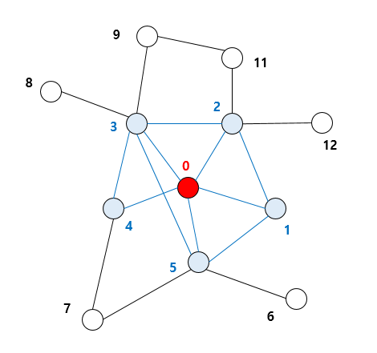
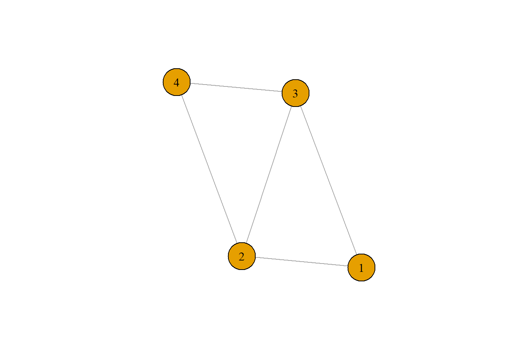
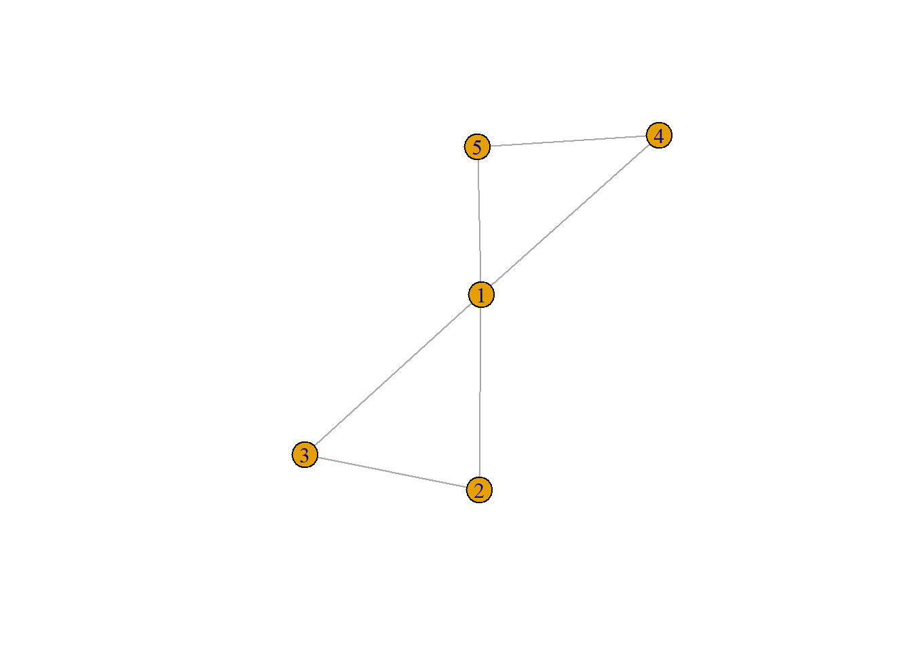
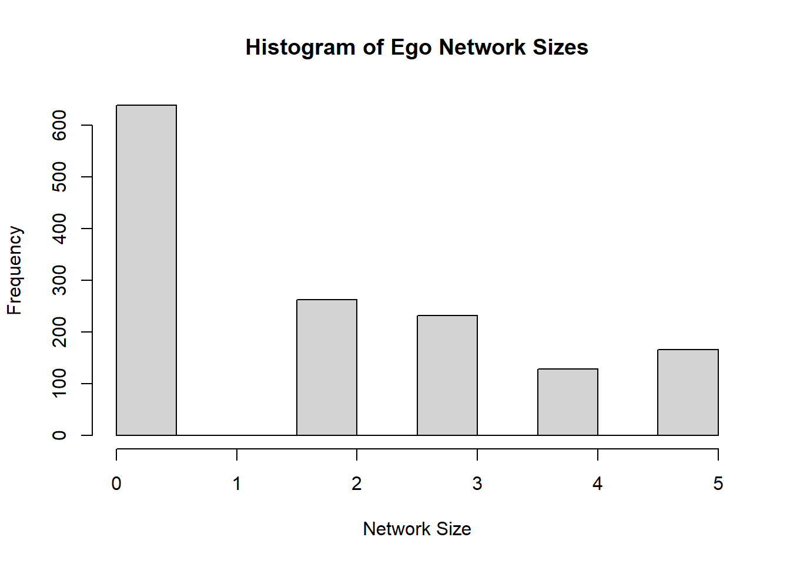
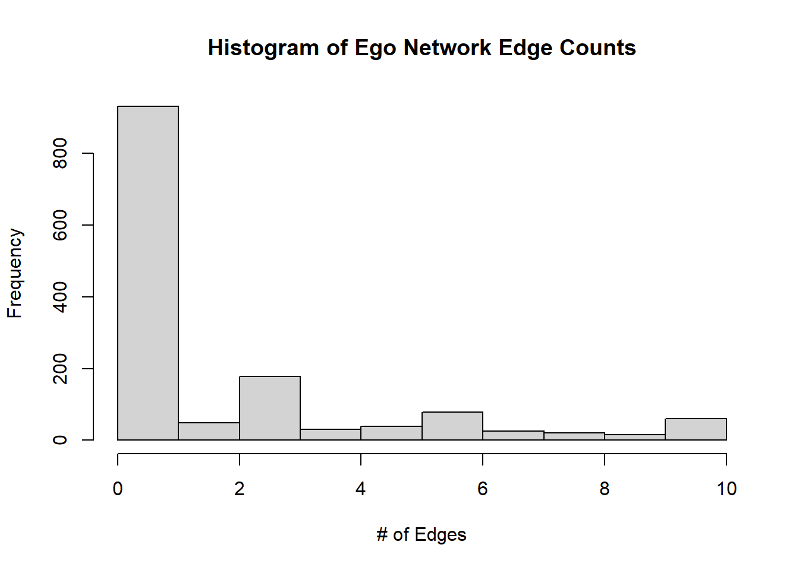
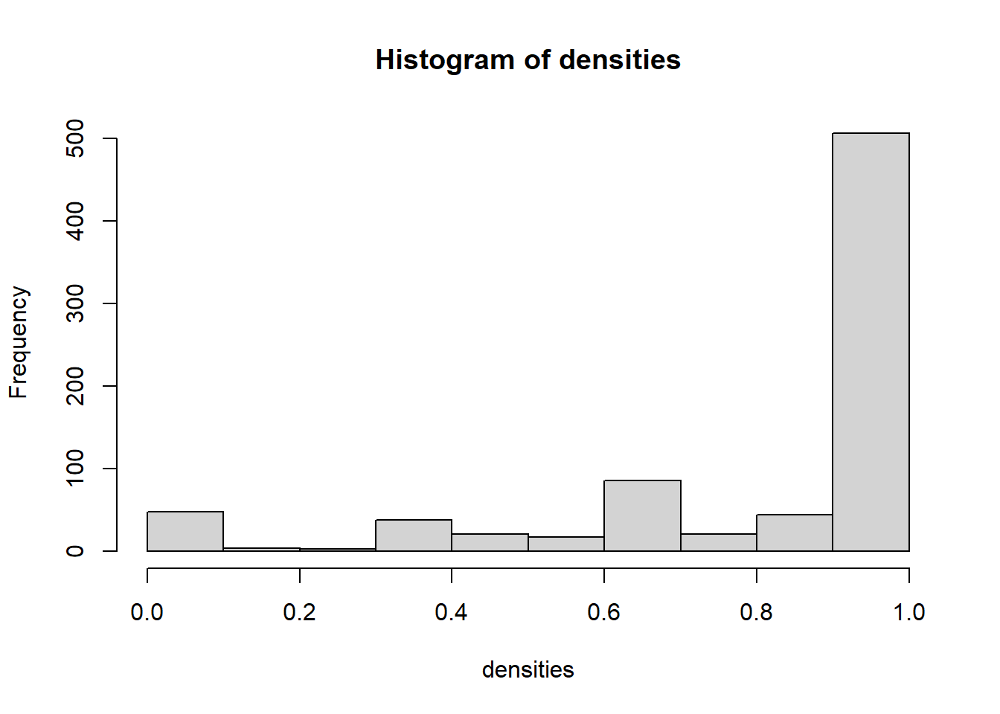

Chapter 4 에고 네트워크(Ego Networks)
에고 네트워크는 에고(ego)라 불리는 하나의 중심이 되는 액터와 그 액터와 연결된 알터(alter)라 불리는 다른 액터들, 그리고 이들 알터들 간의 연결로 구성되는 네트워크를 말한다. 예를 들어 아래 네트워크 중 0의 에고 네트워크를 찾는다면, 에고인 0와 알터인 1, 2, 3, 4, 5을 포함하는 파란색으로 표시된 노드와 링크가 이에 해당한다.

4.1 에고 네트워크 분석하기
2004년 GSS 서베이 데이터의 네트워크 모듈 데이터를 사용하여 에고 네트워크를 분석해보자. 데이터는 호프만 교수의 깃헙에서 다운로드 받을 수 있다.
library(igraph)
gss <- read.csv("https://raw.githubusercontent.com/mahoffman/stanford_networks/main/data/gss_local_nets.csv", stringsAsFactors = TRUE) 데이터가 어떻게 생겼는지 살펴보자.
head(gss)## sex race age partyid relig numgiven close12 close13
## 1 female other 52 independent catholic 0 NA NA
## 2 female other 43 not str republican catholic 0 NA NA
## 3 male black 52 strong democrat protestant 4 1 2
## 4 female other 34 ind,near dem catholic 4 2 0
## 5 male other 22 ind,near dem moslem/islam 0 NA NA
## 6 male black 26 not str democrat protestant 6 0 2
## close14 close15 close23 close24 close25 close34 close35 close45 sex1 sex2
## 1 NA NA NA NA NA NA NA NA NA NA
## 2 NA NA NA NA NA NA NA NA NA NA
## 3 0 NA 2 2 NA 1 NA NA 1 1
## 4 2 NA 2 2 NA 2 NA NA 1 0
## 5 NA NA NA NA NA NA NA NA NA NA
## 6 1 1 1 1 1 2 2 2 1 1
## sex3 sex4 sex5 race1 race2 race3 race4 race5 educ1 educ2 educ3
## 1 NA NA NA NA NA NA NA NA NA <NA> <NA>
## 2 NA NA NA NA NA NA NA NA NA <NA> <NA>
## 3 0 0 NA 1 1 1 1 NA 1 h.s. grad Grad
## 4 1 1 NA 2 2 2 2 NA 1 h.s. grad Grad
## 5 NA NA NA NA NA NA NA NA NA <NA> <NA>
## 6 0 1 1 0 1 1 2 2 1 h.s. grad h.s. grad
## educ4 educ5 age1 age2 age3 age4 age5 relig1 relig2
## 1 <NA> <NA> NA NA NA NA NA <NA> <NA>
## 2 <NA> <NA> NA NA NA NA NA <NA> <NA>
## 3 Bachelors <NA> 56 40 58 59 NA protestant protestant
## 4 Grad <NA> 63 36 34 36 NA catholic catholic
## 5 <NA> <NA> NA NA NA NA NA <NA> <NA>
## 6 Some College Some College 25 25 39 33 30 other other
## relig3 relig4 relig5
## 1 <NA> <NA> <NA>
## 2 <NA> <NA> <NA>
## 3 protestant protestant <NA>
## 4 catholic catholic <NA>
## 5 <NA> <NA> <NA>
## 6 catholic catholic catholic변수는 총 42개이다. 처음 다섯 개 변수(sex, race, age, partyid, relig)는 각 응답자의 특성을 의미한다. 나머지는 네트워크를 구성하는 변수들이다. GSS 데이터 네트워크 모듈에서는 각 응답자에게 “중요한 이슈”에 대해 함께 논의한 최대 5명의 타인에 대해서 물어본다. numgiven 변수는 응답자가 중요한 이슈를 몇 명과 함께 논의했는지를 나타낸다. 또한 응답자들은 이 타인들 간의 관계에 대해 구체적으로 답한다. 예를 들어, 이들이 특별히 가까운지, 서로 아는지, 아예 모르는 사이인지 등에 대해 밝힌다. 따라서 close12 변수는 타인1과 타인2 간 가까운 정도를 의미한다. 마지막으로, 이 각각의 타인들의 특성(sex, race, age) 변수들도 수집되었다.
왜 이 변수들이 에고 네트워크를 구성하는지 살펴보자. 먼저 각 응답자마다 close12부터 close45까지의 관계 변수들을 엣지 리스트로 바꾸어 주어야 한다.
우선, grepl 함수를 사용하여 우리가 원하는 관계 변수들만을 추출하여 ties라는 데이터프레임으로 저장하자.
ties <- gss[,grepl("close", colnames(gss))]
head(ties)## close12 close13 close14 close15 close23 close24 close25 close34 close35
## 1 NA NA NA NA NA NA NA NA NA
## 2 NA NA NA NA NA NA NA NA NA
## 3 1 2 0 NA 2 2 NA 1 NA
## 4 2 0 2 NA 2 2 NA 2 NA
## 5 NA NA NA NA NA NA NA NA NA
## 6 0 2 1 1 1 1 1 2 2
## close45
## 1 NA
## 2 NA
## 3 NA
## 4 NA
## 5 NA
## 6 2각 응답자마다 다음의 작업을 진행할 것이다: 5 x 5 행렬을 만들어서 각 응답자마다 closeness 값을 채워 넣는다.
mat = matrix(nrow = 5, ncol = 5)각 응답자의 close 값들을 행렬의 대각성분 아래쪽(lower triangle)에 할당할 수 있다. 예를 들어 3번째 응답자의 close 값들을 넣어보자.
mat[lower.tri(mat)] <- as.numeric(ties[3,])방향성이 없는 네트워크에서는 대각성분을 기준으로 대칭이기 때문에, 대각성분 위쪽(upper triangle)에도 값을 대칭적으로 넣어주면 된다.
mat[upper.tri(mat)] = t(mat)[upper.tri(mat)]
mat## [,1] [,2] [,3] [,4] [,5]
## [1,] NA 1 2 0 NA
## [2,] 1 NA 2 2 NA
## [3,] 2 2 NA 1 NA
## [4,] 0 2 1 NA NA
## [5,] NA NA NA NA NA이제 결측행(missing rows)을 지워주자. NA가 있는 행의 개수를 합한 값이 행렬의 행 개수보다 적은 경우, 결측행이 없다는 것을 의미한다. 즉, 5 X 5 행렬에서 해당 응답자의 모든 응답이 NA인 경우, NA가 있는 행의 개수의 총합은 5이다. 따라서 이 경우는 rowSums(is.na(mat))가 nrow(mat)와 같게 되는 결측행이다.
na_vals <- is.na(mat)
non_missing_rows <- rowSums(na_vals) < nrow(mat)
mat <- mat[non_missing_rows,non_missing_rows]igraph 패키지는 NA를 처리하지 못하므로, 대각성분을 모두 0으로 바꿔주자.
diag(mat) <- 0어떻게 생겼는지 확인해보자.
mat## [,1] [,2] [,3] [,4]
## [1,] 0 1 2 0
## [2,] 1 0 2 2
## [3,] 2 2 0 1
## [4,] 0 2 1 0자 이런 방식으로 인접행렬을 만들어서 3번째 응답자의 네트워크를 만들 수 있다.
ego_net <- graph.adjacency(mat, mode = "undirected", weighted = T)plot(ego_net, vertex.size = 30, vertex.label.color = "black", vertex.label.cex = 1)
문제는 3번째 응답자 뿐만 아니라 데이터의 모든 응답자에 대해서 위의 작업을 해야 한다는 것이다. 따라서 위의 작업을 각 행마다 자동화해주는 함수를 만들어 사용하자.
make_ego_nets <- function(tie){
# make the matrix
mat = matrix(nrow = 5, ncol = 5)
# assign the tie values to the lower triangle
mat[lower.tri(mat)] <- as.numeric(tie)
# symmetrize
mat[upper.tri(mat)] = t(mat)[upper.tri(mat)]
# identify missing values
na_vals <- is.na(mat)
# identify rows where all values are missing
non_missing_rows <- rowSums(na_vals) < nrow(mat)
# if any rows
if(sum(!non_missing_rows) > 0){
mat <- mat[non_missing_rows,non_missing_rows]
}
diag(mat) <- 0
ego_net <- graph.adjacency(mat, mode = "undirected", weighted = T)
return(ego_net)
}그 다음에는 lapply 함수[list+apply]를 사용해서 위에 정의한 함수를 데이터의 각 행에 적용해주면 된다. ties 데이터의 각 행은 각 응답자를 의미한다. 따라서 ties 데이터의 행 개수와 동일한 사이즈의 리스트가 결과로 출력될 것이고, 각 리스트 안에는 각 응답자의 에고 네트워크가 포함될 것이다.
ego_nets <- lapply(1:nrow(ties),
FUN = function(x) make_ego_nets(ties[x,]))
head(ego_nets)## [[1]]
## IGRAPH 2ed2f3f U--- 0 0 --
## + edges from 2ed2f3f:
##
## [[2]]
## IGRAPH 2ed3558 U--- 0 0 --
## + edges from 2ed3558:
##
## [[3]]
## IGRAPH 2ed369c U-W- 4 5 --
## + attr: weight (e/n)
## + edges from 2ed369c:
## [1] 1--2 1--3 2--3 2--4 3--4
##
## [[4]]
## IGRAPH 2ed37b4 U-W- 4 5 --
## + attr: weight (e/n)
## + edges from 2ed37b4:
## [1] 1--2 1--4 2--3 2--4 3--4
##
## [[5]]
## IGRAPH 2ed393a U--- 0 0 --
## + edges from 2ed393a:
##
## [[6]]
## IGRAPH 2ed3ad5 U-W- 5 9 --
## + attr: weight (e/n)
## + edges from 2ed3ad5:
## [1] 1--3 1--4 1--5 2--3 2--4 2--5 3--4 3--5 4--5에고 네트워크의 리스트가 잘 만들어졌다. 그럼 랜덤으로 1021번째 응답자의 에고 네트워크를 추출해서 그려보자.
random_ego_net <- ego_nets[[1021]]
plot(random_ego_net)
4.2 네트워크 크기와 밀도 계산하기 (Calculating Network Size and Density)
네트워크의 리스트가 있으므로 lapply 함수를 써서 여러 가지를 계산할 수 있다. vcount() 함수로 네트워크 크기(=노드의 개수)를 계산하거나, ecount() 함수로 엣지의 개수를 계산할 수 있다.
network_sizes <- lapply(ego_nets, vcount)
network_edge_counts <- lapply(ego_nets, ecount)
head(network_sizes)## [[1]]
## [1] 0
##
## [[2]]
## [1] 0
##
## [[3]]
## [1] 4
##
## [[4]]
## [1] 4
##
## [[5]]
## [1] 0
##
## [[6]]
## [1] 5이 리스트를 벡터로 바꾼 후 mean() 안에 input으로 넣으면 평균도 계산 가능하다.
network_sizes <- unlist(network_sizes)
mean(network_sizes, na.rm = T)## [1] 1.796634평균 네트워크는 약 1.8 정도의 크기(=노드 개수)를 가지고 있다. 네트워크 크기의 분포를 시각화할 수도 있겠다. The average network has a little over one and a half people in it. We could similarly plot the distribution.
hist(network_sizes, main = "Histogram of Ego Network Sizes", xlab = "Network Size")
엣지에 대해서도 똑같이 해볼 수 있다.
network_edge_counts <- unlist(network_edge_counts)
hist(network_edge_counts, main = "Histogram of Ego Network Edge Counts", xlab = "# of Edges")
다음은 밀도를 계산해보자. 네트워크 밀도는 한 네트워크의 링크 개수를 최대로 가능한 링크 개수의 총합으로 나눈 값이다. 예를 들어 방향성이 없는 네트워크에서는 노드가 총 N개 있다면(=size of N), 모두가 서로 연결됐다고 가정할 때 최대로 가능한 엣지 개수는 (N*(N-1))/2이다.
밀도(Density) - 실제로 존재하는 링크의 비율(가능성에 비해) - 한 네트워크의 링크 개수를 최대로 가능한 링크 개수의 총합으로 나눈 값 - 평균 디그리/노드 숫자
앞서 랜덤으로 1021번째 응답자의 네트워크를 골랐던 것처럼, 이번에도 이 랜덤 네트워크의 밀도를 계산해보자.
ecount(random_ego_net)/((vcount(random_ego_net) * (vcount(random_ego_net) - 1))/2)## [1] 0.6이렇게 계산해볼 수 있지만, 우리는 네트워크 리스트에 적용을 해야 한다. igraph 패키지의 graph.density 함수를 리스트의 각 요소에 적용한 후, 벡터로 만들어주자.
densities <- lapply(ego_nets, graph.density)
densities <- unlist(densities)마지막으로 이 네트워크 밀도의 분포를 히스토그램으로 시각화할 수 있다.
hist(densities)